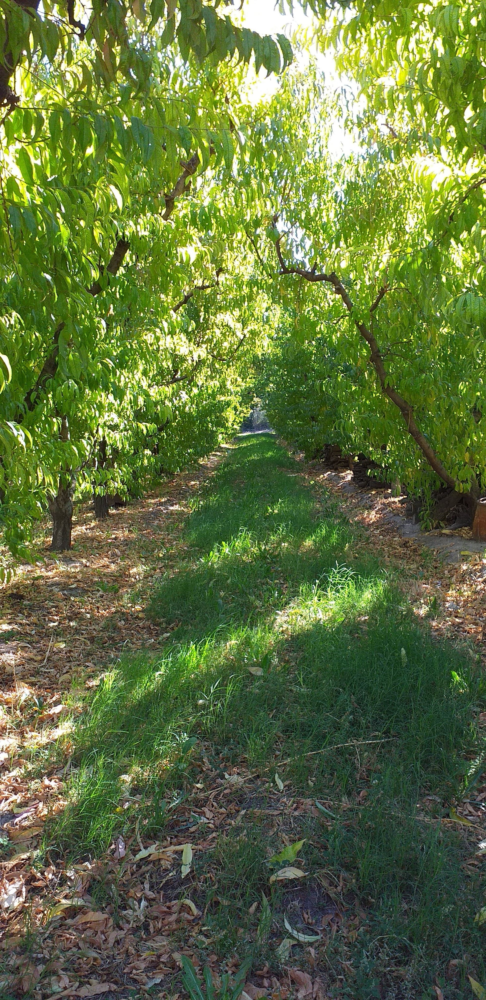

Hola! Mi nombre es Fabio y les voy a contar un poquito cómo arrancó todo... Yo comencé a trabajar con 18 años en esta chacra como empleado hace 33 años, pero en su momento la misma era trabajada con métodos desactualizados y solamente tenía plantación de pera y manzana. El sueño mío y de mi esposa Sonia, era que en un futuro sea nuestra, ya que toda la vida nos dedicamos a esto, asique con muchos años de trabajo arduo, luego de 22 años, pudimos llevar a cabo dicho deseo. Comenzamos de a poco a cambiar la forma de trabajo, a incorporar nuevos frutales como duraznos y pelones debido a que en estos tiempos es más rentable la fruta de carozo. Con los años se fueron sumando al proyecto nuestros hijos Gonzalos y Gisel. Siempre tratamos de que sea un proyecto familiar, donde trabajamos juntos y llevamos adelante este propósito. Con el tiempo nos fuimos armando de herramientas para labrar nuestra tierra y hasta el día de hoy seguimos pensando y planeando cosas a futuro para seguir creciendo.
NOSOTROS


